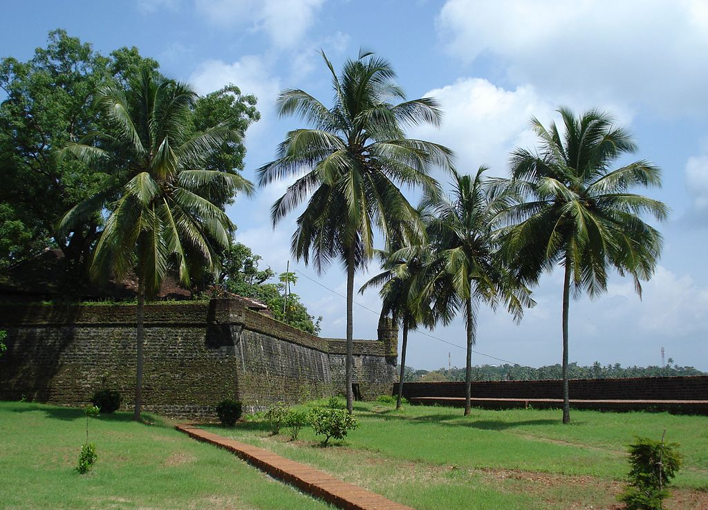
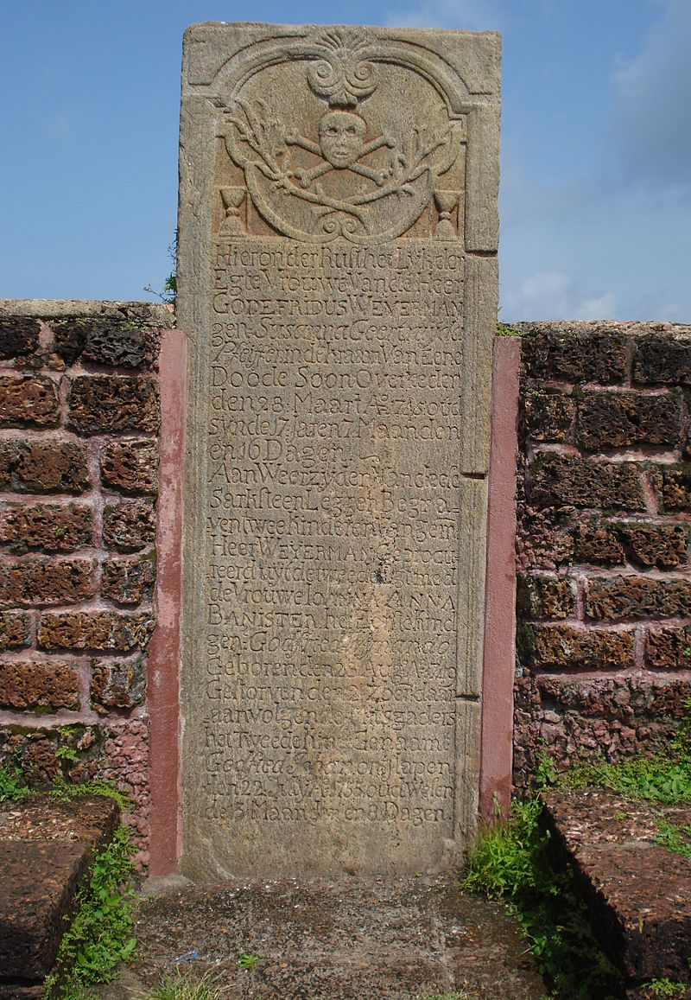

KANNUR
Kannur is a coastal city in the south Indian state of Kerala. It was once an ancient trading port. Enduring monuments such as 16th-century St. Angelo Fort, once occupied by European colonial forces, show the city’s significant role in the spice trade. Housed in a former palace, the Arakkal Museum highlights Kerala's one Muslim royal family. The palm-fringed sands of Payyambalam Beach run along Kannur’s western shore



St. ANGELO FORT
St. Angelo Fort (also known as Kannur Fort or Kannur Kotta) is a fort facing the Arabian Sea, situated 3 km from Kannur, a city in Kerala state, south India. In 1498, during Vasco da Gama's visit to India, the local Kolathiri king granted the land to Portuguese to build a settlement in present-day Kerala. On 23 October 1505, he gave the Portuguese leader Francisco de Almeida the permission to build a fort at the site. The construction activity began the very next day, on 24 October 1505, when Goncalo Gil Barbosa - the Portuguese factor of Cannanore (Kannur) - laid the foundation stone.The fort is in the Cannanore Cantonment area. It is fairly well preserved as a protected monument under the Archaeological Survey of India. St Angelo's fort is a most important historical monument and a popular tourist attraction. Six Tourism Policeman are posted here for protection duty.
KANNUR LIGHTHOUSE
The Kannur Lighthouse is located near the Payyambalam Beach, a few kilometers from Kannur town, in Kerala state, south India. It is adjacent to the Sea View Park and the Government Guest House. The lighthouse is still active and overlooks the Arabian Sea. Cannanore is the old English name for the town named Kannur. The lighthouse at Kannur is still often referred to as the Cannanore lighthouse